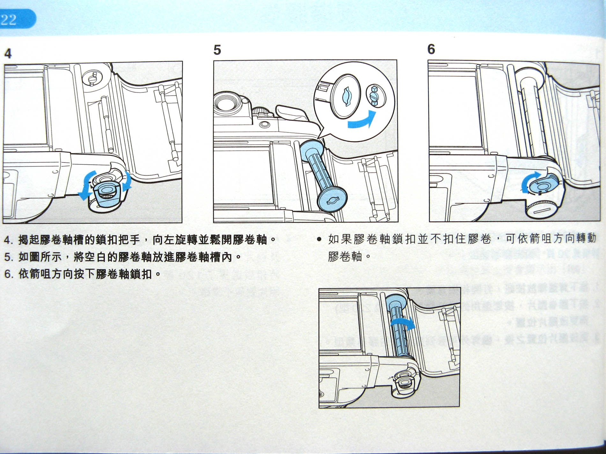
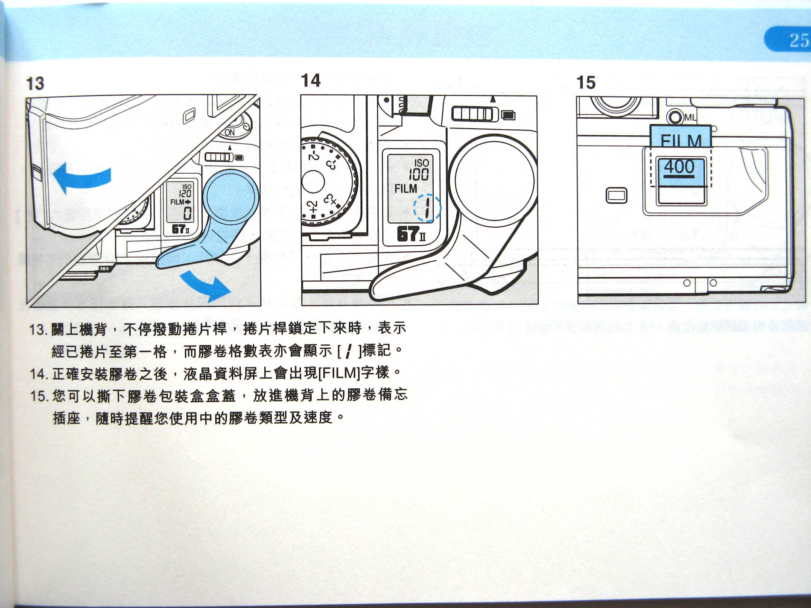

第 1 步：
检查底部右侧轴扣（你说的“右边拨轮”）
相机底盘右侧有一个锁空卷轴的圆形扣子。
排查要点：
这个扣子如果没有顶到底卡进空轴十字槽，空卷轴本身就是锁死的，手柄肯定拉不动！
做法：打开小曲柄，用力往里推到底，顺着箭头转平锁紧。如果顶不进去，轻轻用手指转动一下卷仓里的空轴对齐孔位。

📖 原厂说明书第 24 页：空卷轴装入与锁紧步骤
第 3 步：
关上后盖，继续连续过卷直到出现数字 1
为什么关上盖子屏幕没数字、拍不了？
排查要点：
开盖对齐红三角只是起点，此时底片还没到拍摄位置！机器为了防误拍，此时快门是自锁的，屏幕也绝不显示张数。
做法：
1. 关严后盖（必须听到清脆咔哒锁严声）。
2. 右手大拇指继续连续拨动卷片手柄 2~3 次，一直拨到手柄彻底锁死停住！
3. 此时抬头看液晶肩屏，屏幕上会正式跳出 大字【1】。
4. 只有出现【1】时，快门才正式解锁，就可以按快门拍摄了。

📖 原厂说明书第 27 页：关盖过卷跳出第 1 格说明